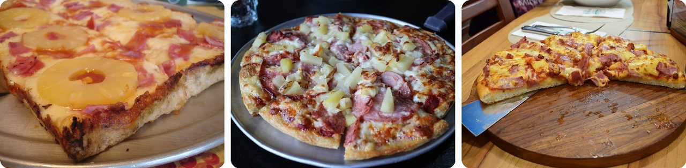
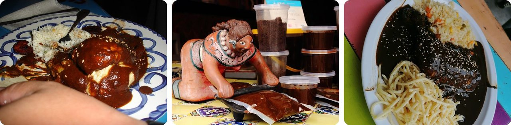
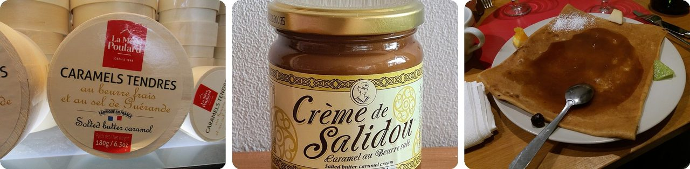
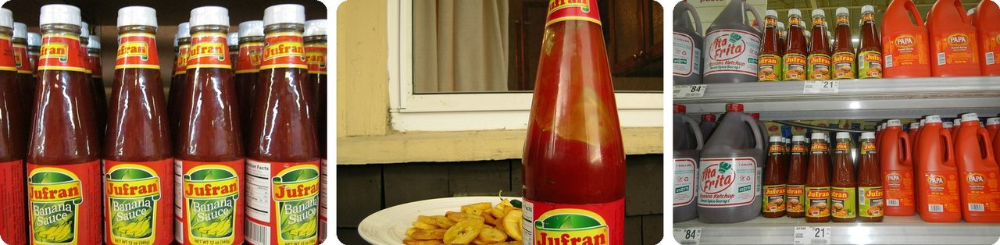
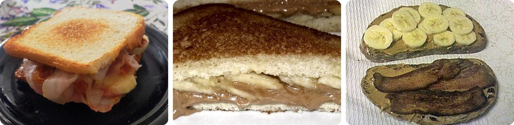
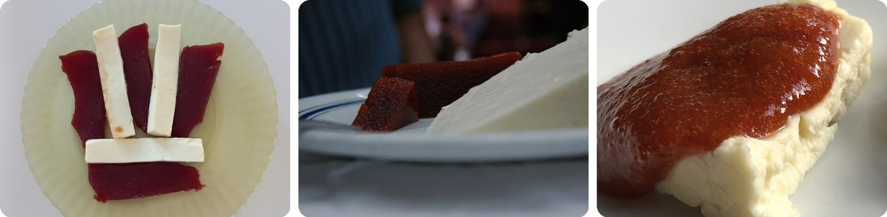
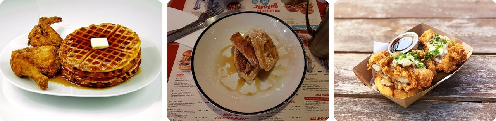
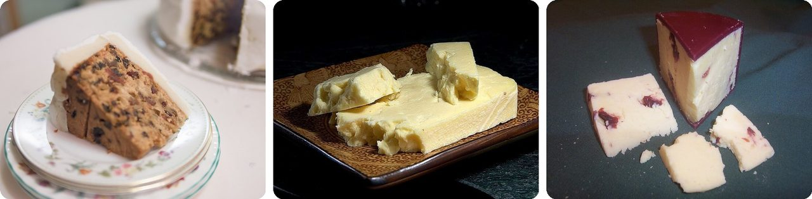
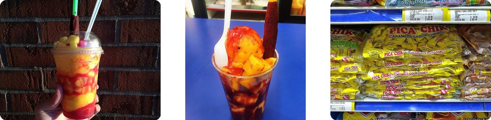

🌍 Top 10 Crazy Food Flavor Combos
Nov 1, 2026
1. 🇨🇦 Hawaiian pizza was invented in Canada, not Hawaii

In 1962, Sam Panopoulos, a Greek-born cook, put pineapple and ham on a pizza at his Satellite Restaurant in Chatham-Kent, Ontario. He'd been cooking Canadian Chinese dishes that mix sweet and sour, so he wondered: why not pizza too?
The name has nothing to do with the islands. He called it "Hawaiian" because the canned pineapple came from the Hawaiian Pineapple Company.
People still fight about it. In 2017, Iceland's president joked that he'd ban pineapple on pizza if he could, and Canada's then prime minister, Justin Trudeau, tweeted that he stood behind "this delicious Southwestern Ontario creation." Meanwhile, in Australia in 1999, it was the most popular pizza in the country, about 1 in every 7 pizzas sold.
Basically, a Greek-Canadian cook named a pizza after a can label.
2. 🇲🇽 Mexico's mole poblano mixes chili peppers with chocolate

Mole poblano is a thick, dark sauce from Puebla, Mexico, poured over turkey or chicken. It blends two or more kinds of dried chili peppers with nuts, spices, dried fruit and sometimes a bit of chocolate, added at the very end.
A typical recipe uses about 20 ingredients. Everything gets roasted, then ground into a paste, and doing that by hand takes at least a full day. Families used to share the work across grandmothers, mothers and daughters.
A famous legend says nuns at a convent in Puebla, panicking before a visit from an archbishop, threw together the little they had (chilies, nuts, old bread, a bit of chocolate) and poured it over an old turkey. The archbishop loved it.
Think of it as a spicy sauce with a hidden spoonful of dessert.
3. 🇫🇷 Salted caramel started with a candy maker in Brittany

Brittany, in northwest France, is famous for butter that's already salted. So people there had been mixing salt and caramel for a long time, in pastries and soft candies.
In 1977, pastry chef Henri Le Roux in the seaside town of Quiberon made a salted butter caramel that stayed fresh much longer. In 1980 it won "Best Candy in France." Fancy Paris chefs picked up the idea in the late 1990s, and in 2008 Häagen-Dazs and Starbucks put it in front of everyone.
Why can't people stop eating it? A 2017 study suggested its layered flavor makes the brain release more of its own feel-good chemicals, so you want another bite.
In other words, a pinch of salt turns candy into a "just one more" trap.
4. 🇵🇭 Filipinos put banana ketchup on their spaghetti

Banana ketchup is made from bananas, sugar, vinegar and spices. On its own it's brownish-yellow, so makers usually dye it red to look like tomato ketchup.
It was born from a shortage. During World War II, the Philippines had few tomatoes but lots of bananas, so food scientist Maria Orosa is credited with inventing a banana version, and in 1942 a company called Mafran started making it in big batches.
Today, Filipino families pour it on almost everything: hot dogs, burgers, fries, grilled pork, fried chicken and Filipino spaghetti.
It's ketchup wearing a banana disguise.
5. 🇺🇸 Elvis loved peanut butter, banana and bacon sandwiches

The "Elvis sandwich" is toasted bread with peanut butter, banana slices and often crispy bacon, usually cooked in a pan. One book says singer Elvis Presley would wolf down "sandwich after sandwich" of them while talking until dawn.
He went even bigger with the Fool's Gold Loaf: a whole loaf of French bread stuffed with one pound (450 g) each of bacon, peanut butter and grape jelly. That's 3 pounds (about 1.4 kg) of filling, as heavy as a big bottle of soda, in one sandwich.
The combo may have spread thanks to bananas, too. In 1967, the banana company Chiquita handed out 90,000 recipe cards for the sandwich.
Breakfast, lunch and dessert, squeezed between two slices of toast.
6. 🇧🇷 In Brazil, guava paste and cheese are "Romeo and Juliet"

Romeu e Julieta (Portuguese for "Romeo and Juliet") is a simple Brazilian dessert: a slice of goiabada (a firm, sweet guava paste) on a slice of mild white cheese. The cheese is Romeo, and the guava is Juliet.
It probably started in the state of Minas Gerais centuries ago. Portuguese settlers made cheese there, and goiabada was invented as a stand-in for the fruit marmalade they had back home.
The romantic name only came in the 1960s, from an ad for a guava paste brand. It showed Mônica and Cebolinha, two popular Brazilian cartoon kids, dressed up as Romeo and Juliet.
Basically, it's a love story you can eat with a fork.
7. 🇯🇵 Japan has made over 400 Kit Kat flavors, including soy sauce
Since 2000, Japan has sold more than 400 limited-edition Kit Kat flavors. They include green tea, purple sweet potato, red bean, sake and chili pepper. In 2010, the best-selling flavor was soy sauce.
Here's the trick: some flavors are only sold in one region. In Japan, people bring local treats home as gifts after a trip, so a rare flavor is the perfect souvenir.
And the name helped. "Kit Kat" sounds like "kitto katsu," Japanese for "you will surely win," so students get them as good-luck charms before big exams. In 2009, people could even mail one from 20,000 post offices.
In other words, a candy bar that's also a souvenir and a lucky charm.
8. 🇺🇸 Chicken and waffles started out with catfish

Fried chicken with waffles, butter and syrup sounds like a dare: dinner and breakfast on one plate. But Americans have been eating chicken with waffles for centuries.
Waffles got a boost after Thomas Jefferson bought four waffle irons in Amsterdam in 1789. In the early 1800s, hotels outside Philadelphia served waffles with fried catfish. Catfish was only around in some seasons, so fried chicken slowly took its place.
The Pennsylvania Dutch version is a plain waffle under stewed chicken and gravy. The sweet-and-salty fried chicken version got famous after the Wells Supper Club opened in Harlem, New York, in 1938.
It's a breakfast that showed up to dinner and never left.
9. 🏴 In Yorkshire, people eat fruit cake with cheese

In Yorkshire and northeast England, a slice of fruit cake or Christmas cake often comes with a slice of Wensleydale cheese. Its flavor goes well with sweet things, like apples. The English have also topped apple pie with sharp cheese since the 1600s.
Wensleydale has a long story: French monks who settled in northern England started making it, and local farmers kept going after the monastery was shut down in 1540.
Then, in the 1990s, sales fell so low that cheesemaking in Wensleydale was at risk. What saved it? Wallace, the cheese-loving cartoon inventor from Wallace & Gromit, kept naming it as his favorite. When their 2005 movie came out, sales jumped 23%.
Think of it as cake and a cheese plate deciding to share a napkin.
10. 🇲🇽 A mangonada is sweet, sour, salty and spicy all at once

A mangonada is mango shaved ice or sorbet with fruit chunks, chili powder and chamoy, a Mexican sauce that tastes salty, sweet, sour and spicy at the same time. The straw often comes coated in tamarind candy.
Chamoy starts with pickling. Fruit is soaked in salty brine → the fruit gets dried and sold as a snack → the leftover salty fruit juice gets chili powder mixed in, and that becomes chamoy.
Its roots go all the way to China's dried salty plum snacks. One idea is that they reached Mexico through Filipino travelers on the Spanish galleons that sailed between Manila and Mexico from 1565 to 1815.
Every taste your tongue has, packed into one cup.
Fun fact
Maria Orosa from entry 4 was much more than a ketchup inventor. During World War II she also created Soyalac, a soybean drink, and darak, rice-bran cookies packed with vitamin B1, and her guerrilla group hid them inside hollow bamboo to sneak them into prison camps, helping save thousands of lives. In 2022, The New York Times finally gave her an obituary, in a series about remarkable people it had overlooked. Foods invented because of wartime shortages could be a tasty theme to explore next.
Photo credits (Wikimedia Commons)
- #1: Hawaiian pizza 1.jpg by @joefoodie from USA, CC BY 2.0
- #1: Hawaiian pizza image.jpg by Elsie Hui, CC BY 2.0
- #1: Hawaiian Pizza in Tak.JPG by PumpkinSky, CC BY-SA 4.0
- #2: Mole Poblano.jpg by Melissa Doroquez, CC BY-SA 2.0
- #2: Mole poblano, México.JPG by Adrián Cerón, CC BY-SA 4.0
- #2: Mole poblano de fiesta.jpg by Pabliotecario, CC BY-SA 4.0
- #3: Caramels au beurre salé - La Mère Poulard.jpg by Arnaud 25, CC BY-SA 4.0
- #3: Crème de Salidou (caramel au beurre salé).jpg by Ji-Elle, CC BY-SA 4.0
- #3: Lyon 7e - Crêperie Caramel Salé, crêpe au caramel beurre salé.jpg by Romainbehar, CC0
- #4: Jufran Banana Sauce bottles.JPG by BrokenSphere, CC BY-SA 3.0
- #4: Banana ketchup.jpg by John Stephen Dwyer (HouseOfScandal at en.wikipedia), Public domain
- #4: 0001jfPhilippine cuisine dishes Baliuag Bulacafvf 16.jpg by Judgefloro, CC0
- #5: ElvisSandwich.jpg by AnticoMu90, CC BY-SA 4.0
- #5: Elvis Banana and Peanut Butter Sandwiches.jpg by Caballero1967, CC BY-SA 4.0
- #5: A B Sandwich.jpg by Rex Roof from Ann Arbor, MI, USA, CC BY 2.0
- #6: Queijo minas e goiabada.jpg by Cataleirxs, CC BY-SA 4.0
- #6: Bar Guanabara - goiabada com queijo (4774966171).jpg by Monica Kaneko from Sao Paulo, Brasil, CC BY-SA 2.0
- #6: Romeo e julieta.jpg by إيان, CC BY-SA 4.0
- #7: Japanese kit Kat varieties.jpg by Haha169, CC BY-SA 4.0
- #7: KitKat Yawatayaisogoro Ichimi (Hot Japanese Chili Flavor) split (15844779724).jpg by Bodo, CC BY 2.0
- #7: Green tea Kit Kat on wrapper.jpg by Hameltion, CC BY-SA 4.0
- #8: Chicken and Waffles 201 - Evan Swigart.jpg by Evan Swigart, TheCulinaryGeek from Chicago, USA, CC BY 2.0
- #8: Fried Chicken & Waffles - Ed's Easy Diner 2023-09-01.jpg by Andy Li, CC0
- #8: Chicken and waffles - the fig rig - Sarah Stierch - October 2018.jpg by Missvain, CC BY 4.0
- #9: Slice of Christmas cake (8368296861).jpg by James Petts from London, England, CC BY-SA 2.0
- #9: Wensleydale cheese.jpg by Jon Sullivan, Public domain
- #9: Wensleydale with Cranberries cheese.jpg by Kaly99, Public domain
- #10: Mangonada.jpg by LittleT889, CC BY-SA 4.0
- #10: Mangonada with mango ice cream.jpg by merri, CC BY-SA 2.0
- #10: Chamoy flavored Mexican Candy.jpg by Thayne Tuason, CC BY 4.0


.jpg){kind=link}


.jpg){kind=link}


_split_(15844779724).jpg){kind=link}


.jpg){kind=link}